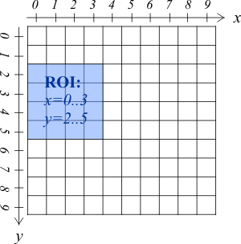

You can select a sub-region (region of interest, ROI) in your image series for which to do the correlation. All pixels outside the ROI will be ignored during processing. The ROI is specified by the first and last USED pixels (0-indexed) in both directions. So a range of x=0..3, y=2..5 will result in a 4×4 image.
$$qf_commondoc_backtop$$
This plugin supports two modes of binning: